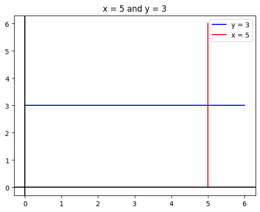

Plotting Simple Curves
Import and Settings
We will import NumPy and matplotlib. In addition, we will also start with some customised layout for the plot.
Partitioning the real line
In order to plot a curve, we need a set of \(x\) values and the corresponding \(y\) values. Since \(x\) is the independent variable, we need to first generate a list of values for \(x\).
In NumPy:
Curves
We shall plot several curves, starting from simple curves to more complex ones. In this process, we will also learn how to add simple annotations to the plot.
Curve-1
Plot \(y = x\) for \(x \in [0, 1]\). Sample \(10\) equally spaced points in this interval, inclusive of endpoints.
In NumPy:

If we also wish to visualise the points, we can add a scatter plot along with the line plot.

Curve-2
Plot \(y = 5 - 3x\) for \(x \in [-5, 5]\). Sample \(20\) equally spaced points in this interval, inclusive of endpoints. Add a title to the plot which has the equation of the curve.

Curve-3
Plot \(y = x^2\) for \(x \in [-1, 1]\). Try out four different samples for x:
- \(5\) equally spaced points in this interval, endpoints inclusive
- \(10\) equally spaced points in this interval, endpoints inclusive
- \(20\) equally spaced points in this interval, endpoints inclusive
- \(50\) equally spaced points in this interval, endpoints inclusive
Observe the differences in these four plots. Which one would you choose? Add the equation of the curve as the title of the plot. Also add the x and y-axis to the plot.

Curve-4
Plot \(y = 3\) and \(x = 5\) on the same plot. Color the first one green and the second one red. Limit your plot to the region \(x \in [0, 6]\) and \(y \in [0, 6]\).
- Label the x and the y axes.
- Add a suitable title.
- Add a legend.
# y = 3
x = np.linspace(0, 6, 2)
y = np.ones(2) * 3
plt.plot(x, y, color = 'blue', label = 'y = 3')
# x = 5
x = np.ones(2) * 5
y = np.linspace(0, 6, 2)
plt.plot(x, y, color = 'red', label = 'x = 5')
plt.legend()
plt.title('x = 5 and y = 3')
plt.axhline(color = 'black')
plt.axvline(color = 'black');
Subplots
Sometimes we may have to plot multiple objects, each in a separate plot. Plot the following curves, each in a separe plot:
\(y = \ln x, \quad x \in \left( \cfrac{1}{e^2}, e^3 \right)\)
\(y = e^x, \quad x \in (0, 3)\)
\(y = \sin x, \quad x \in [0, 2 \pi]\)
\(y = \cfrac{1}{x}, \quad x \in (0, 5)\)
Title each curve appropriately.
# rcParams is like a dict
# controls various configurations
plt.rcParams['figure.figsize'] = [8, 8]
plt.rcParams['font.size'] = 10
# Plot-1
plt.subplot(2, 2, 1)
x = np.linspace(1 / np.e ** 2, np.e ** 3)
y = np.log(x)
plt.plot(x, y)
plt.title('y = ln x')
# Plot-2
plt.subplot(2, 2, 2)
x = np.linspace(0, 3)
y = np.exp(x)
plt.plot(x, y)
plt.title('$y = e^x$')
# Plot-3
plt.subplot(2, 2, 3)
x = np.linspace(0, 2 * np.pi)
y = np.sin(x)
plt.plot(x, y)
plt.title('y = sin x')
# Plot-4
plt.subplot(2, 2, 4)
x = np.linspace(0.1, 5)
y = 1 / x
plt.plot(x, y)
plt.title('y = 1 / x')Text(0.5, 1.0, 'y = 1 / x')